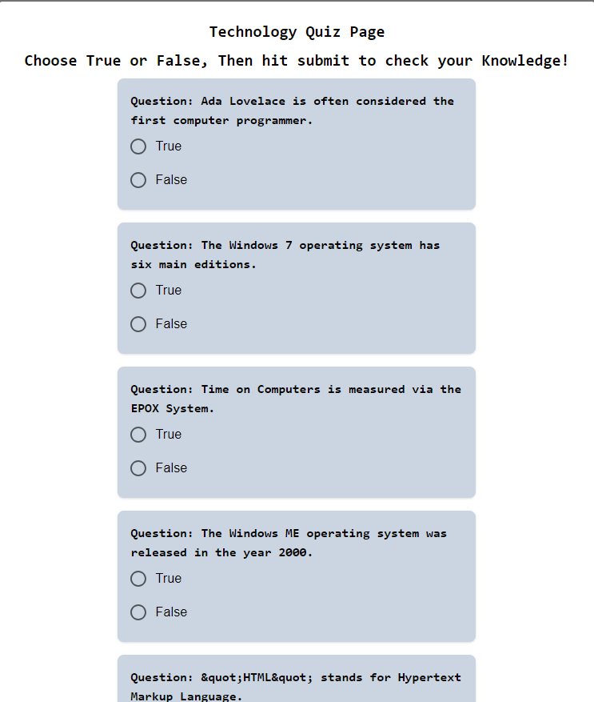

NextJS
Quizz App
This one is a doozy, we have very little experience with newish frameworks and altho nextJS is not new using server actions to pass props to other components is very new to us, this was alot of late night googling to get this thing working, but along with that comes learning, this app loads 5 questions from a Quiz API provided, it then allows the user to select true or false and sent that info off to a action, that then determins the correct answer and compares it to the selected answer, this application had the best of me, but i will explore more at a later date.
